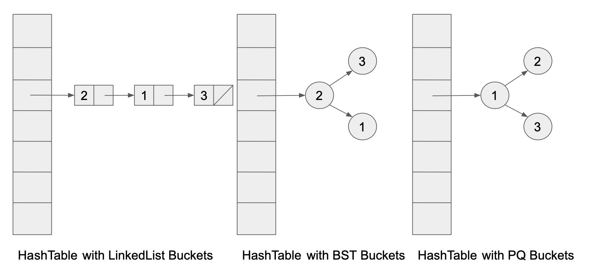

Lab 08: Hashmaps
FAQ
The FAQ for this lab can be found here.
Introduction
In this lab, you’ll work on MyHashMap, a hashtable-based implementation of
the Map61B interface. This will be very similar to Lab 06, except this time
we’re building a HashMap rather than a TreeMap.
After you’ve completed your implementation, you’ll compare the performance of
your implementation to a list-based Map implementation ULLMap as well as the
built-in Java HashMap class (which also uses a hash table). We’ll also compare
the performance of MyHashMap when it uses different data structures to be the
buckets.
MyHashMap
Overview
We’ve created a class MyHashMap in MyHashMap.java, with very minimal starter
code. Your goal is to implement all of the methods in the Map61B interface
from which MyHashMap inherits, except remove, keySet and iterator
(optional for Lab 08). For these, feel free to throw an
UnsupportedOperationException.
Note that your code will not compile until you implement all the methods of
Map61B. You can implement methods one at a time by writing the method
signatures of all the required methods, but throwing
UnsupportedOperationExceptions for the implementations until you get around to
actually writing them.
Refresher Animation
The following is a quick animation of how a hash table works. N refers to the
number of items in the hash table, and M refers to the number of buckets.
We use an object’s hashCode modulo’d (%) by the number of buckets to determine
which bucket the object (represented by a shape) falls into. When the load
factor is reached, we multiply the number of buckets by the resizing factor and
rehash all of the items, modulo-ing them by the new number of buckets.
For the video animation below, the hash function is arbitrary and outputs a random integer for each shape (the object) that is inputted.
Credits to Meshan Khosla for this animation!
Skeleton Code
You might recall from lecture that when we build a hash table, we can choose a
number of different data structures to be the buckets. The classic approach is
to choose a LinkedList. But we can also choose ArrayLists, TreeSets, or
even other crazier data structures like PriorityQueues or even other
HashSets!

During this lab, we will try out hash tables with different data structures for each of the buckets, and see empirically if there is an asymptotic difference between using different data structures as hash table buckets.
For this lab, we will be trying out LinkedList, ArrayList, HashSet,
Stack, and ArrayDeque (unfortunately, no TreeSet or PriorityQueue like
the diagram above shows due to excessive boilerplate, though you’re welcome to
try it if you’d like). That’s a lot of classes!
You can imagine that if we implemented MyHashMap without much care, it would
take a lot of effort with Find + Replace to be able to change out the bucket
type with a different bucket type. For example, if we wanted to change all our
ArrayList buckets to LinkedList buckets, we would have to Find + Replace for
all occurrences of ArrayList and replace that with LinkedList. This is not
ideal - for example, we may have a non-bucket component that relies on some
ArrayList methods. We wouldn’t want to ruin our code by changing that to a
LinkedList!
The purpose of the starter code is to have an easier way to try out different
bucket types with MyHashMap. It accomplishes this through polymorphism and
inheritance, which we learned about earlier this semester. It also makes use of
factory methods and classes, which are utility code used to create objects.
This is a common pattern when working with more advanced code, though the
details are out-of-scope for 61B.
MyHashMap implements the Map61B interface through use of a hash table. In
the starter code, we give the instance variable
private Collection<Node>[] buckets, which is the underlying data structure of
the hash table. Let’s unpack what this code means:
bucketsis aprivatevariable in theMyHashMapclass.private Collection<Node>[] buckets;- It is an array (or table) of
Collection<Node>objects, where eachCollectionofNodes represents a single bucket in the hash table Nodeis a private (nested) helper class we give that stores a single key-value mapping. The starter code for this class should be straightforward to understand, and should not require any modification.protected class Node { K key; V value; Node(K k, V v) { key = k; value = v; } }java.util.Collectionis an interface which most data structures inherit from, and it represents a group of objects. TheCollectioninterface supports methods such asadd,remove, anditerator. Many data structures injava.utilimplementCollection, includingArrayList,LinkedList,TreeSet,HashSet,PriorityQueue, and many others. Note that because these data structures implementCollection, we can assign them to a variable of static typeCollectionwith polymorphism.- Therefore, our array of
Collection<Node>objects can be instantiated by many different types of data structures, e.g.LinkedList<Node>orArrayList<Node>. Make sure your buckets generalize to any Collection! See the below warning for how to do this. - When creating a new
Collection<Node>[]to store in ourbucketsvariable, be aware that in Java, you cannot create an array of parameterized type.Collection<Node>is a parameterized type, because we parameterize theCollectionclass with theNodeclass. Therefore, Java disallowsnew Collection<Node>[size], for any givensize. If you try to do this, you will get a “Generic array creation” error.
To get around this, you should instead create a new Collection[size], where size is the
desired size.
- The elements of a
Collection[]can be a collection of any type, like aCollection<Integer>or aCollection<Node>. For our purposes, we will only add elements of typeCollection<Node>to ourCollection[].
The mechanism by which different implementations of the hash table implement
different buckets is through a factory method
protected Collection<Node> createBucket(), which simply returns a
Collection. For MyHashMap.java, you can choose any data structure you’d
like. For example, if you choose LinkedList, the body of createBucket would
simply be:
protected Collection<Node> createBucket() {
return new LinkedList<>();
}
Instead of creating new bucket data structures with the new operator, you
must use the createBucket method instead. This might seem useless at first,
but it allows our factory classes to override the createBucket method in order
to provide different data structures as each of the buckets.
In MyHashMap, you can just have this method return a new LinkedList or
ArrayList.
Implementation Requirements
You should implement the following constructors:
public MyHashMap();
public MyHashMap(int initialCapacity);
public MyHashMap(int initialCapacity, double loadFactor);
Some additional requirements for MyHashMap are below:
- Your hash map should initially have a number of buckets equal to
initialCapacity. You should increase the size of yourMyHashMapwhen the load factor exceeds the maximumloadFactorthreshold. Recall that the current load factor can be computed asloadFactor = N/M, whereNis the number of elements in the map andMis the number of buckets. The load factor represents the amount of elements per bucket, on average. IfinitialCapacityandloadFactoraren’t given, you should set defaultsinitialCapacity = 16andloadFactor = 0.75(as Java’s built-in HashMap does). - You should handle collisions with separate chaining. You should not use any
libraries other than the bucket classes,
Collection,Iterator,Set, andHashSet. For more detail on how you should implement separate chaining, see the Skeleton Code section above. - Because we use a
Collection<Node>[]for ourbuckets, when implementingMyHashMap, you are restricted to using methods that are specified by theCollectioninterface. When you are searching for aNodein aCollection, iterate over theCollection, and find theNodewhosekeyis.equals()to the desired key. - If the same key is inserted more than once, the value should be updated each
time (i.e., no
Nodes should be added). You can assumenullkeys will never be inserted. - When resizing, make sure to multiplicatively (geometrically) resize, not additively (arithmetically) resize. You are not required to resize down.
MyHashMapoperations should all be constant amortized time, assuming that thehashCodeof any objects inserted spread things out nicely (recall: everyObjectin Java has its ownhashCode()method).
hashCode() can return a negative value! Java’s modulo operator % will
return a negative value for negative inputs, but we need to send items to a
bucket in the range $[0, M)$. There are a myriad of ways to handle this:
- (Recommended) You can use
Math.floorMod()in place of%for the modulo operation. This has a non-negative range of values, similar to Python’s modulo. - If the resulting value after the
%operation is negative, you can add the size of the array to it. - You can use the
Math.abs()function to convert the negative value to a positive value. Note that $|x| \, \mathrm{mod} \, m$, $|x \, \mathrm{mod} \, m|$, and $x \, \mathrm{mod} \, m$ are not equivalent in general! We’re just using the modulo operation here to make sure we have a valid index. We don’t necessarily care too much about the exact bucket the item goes into, because a good hash function should spread things out nicely over positive and negative numbers. - Option (3) but with a bitmask (don’t worry if you don’t know what this means). This is out-of-scope for 61B, but some of the resources do this, which is why we’ve put it here.
Complete the MyHashMap class according to the specifications in Map61B
and the guidelines above.
Resources
You may find the following resources useful
- Lecture slides:
The following may contain antiquated code or use unfamiliar techniques, but should still be useful:
ULLMap.java(provided), a working unordered linked list basedMap61Bimplementation
Testing
You can test your implementation using TestMyHashMap.java. Some of the tests
are quite tricky and do weird stuff we haven’t learned in 61B. The
comments will prove useful to see what the tests are actually doing.
If you’ve correctly implemented generic Collection buckets, you should also be
passing the tests in TestMyHashMapBuckets.java. The
TestMyHashMapBuckets.java file simply calls methods in TestMyHashMap.java
for each of the different map subclasses that implement a different bucket data
structure. Make sure you’ve correctly implemented MyHashMap using the factory
methods provided (i.e., createBucket) for TestHashMapBuckets.java to pass.
If you choose to implement the additional remove, keySet, and iterator
methods, we provide some tests in TestHashMapExtra.java.
Speed Testing
There are two interactive speed tests provided in InsertRandomSpeedTest.java
and InsertInOrderSpeedTest.java. Do not attempt to run these tests before
you’ve completed MyHashMap. Once you’re ready, you can run the tests in
IntelliJ.
The InsertRandomSpeedTest class performs tests on element-insertion speed of
your MyHashMap, ULLMap (provided), and Java’s built-in HashMap. It
works by asking the user for an input size N, then generates N Strings of
length 10 and inserts them into the maps as <String, Integer> pairs.
Try it out and see how your data structure scales with N compared to the naive
and industrial-strength implementations. Record your results in the provided
file named src/results.txt. There is no standard format required for
your results, and there is no required number of data points. We expect you to
write at least a sentence or two with your observations, though.
Now try running InsertInOrderSpeedTest, which behaves similarly to
InsertRandomSpeedTest, except this time the Strings in <String, Integer>
key-value pairs are inserted in lexicographically-increasing
order. Your code should be in the rough ballpark of Java’s built in solution – say,
within a factor of 10 or so. What this tells us is that state-of-the-art
HashMaps are relatively easy to implement compared to state-of-the-art
TreeMaps. Consider this relation with BSTMap/TreeMap and other data structures -
are there certain instances where a Hashmap might be better? Discuss this with your
peers, and add your answer to results.txt.
Different Bucket Types
If you’ve correctly implemented generic Collection buckets, most of the work
is done! We can directly compare the different data structures used to implement
buckets. We provide speed/BucketsSpeedTest.java, which is an
interactive test that queries the user for an integer L for the length of
string to use on subsequent operations. Then, in a loop, it queries the user for
an integer N, and runs a speed test on your MyHashMap using different types of
buckets.
Try it out and compare how the different implementations scale with N. Discuss
your results with your peers, and record your responses in results.txt.
You might notice that our implementation using HashSets as buckets searches
for a Node by iterating over the entire data structure. But we know hash
tables support more efficient lookups than that. Would our hash table speed up
asymptotically if we were able to use a constant-time search over the HashSet?
You do not need to implement anything new here, just discuss with your peers,
and record your ideas in results.txt.
Run the above speed tests in the speed directory and record your results in results.txt.
Deliverables and Scoring
The lab is out of 5 points. There is one
hidden test on Gradescope (that checks your results.txt). The rest of the
tests are local. If you pass all the local tests and fill out the results.txt
file sufficiently, you will get full credit on Gradescope.
Each of the following is worth $\frac{5}{11}$ points and corresponds to a unit test:
- Generics
clearcontainsKeygetsizeput- Functionality
- Resizing
- Edge cases
- Buckets (all of
TestMyHashMapBuckets) results.txt(not tested locally, but on the Gradescope autograder)
As mentioned, if you are not implementing the optional exercises,
throw an UnsupportedOperationException, like below:
throw new UnsupportedOperationException();
Submission
Just as you did for the previous assignments, add, commit, then push your Lab 08 code to GitHub. Then, submit to Gradescope to test your code.
Optional Exercises
These will not be graded, but you can still receive feedback with the given tests.
Implement the methods remove(K key) and remove(K key, V value), in your
MyHashMap class. For an extra challenge, implement keySet() and iterator()
without using a second instance variable to store the set of keys.
For remove, you should return null if the argument key does not exist in the
MyHashMap. Otherwise, delete the key-value pair (key, value) and return the
associated value.